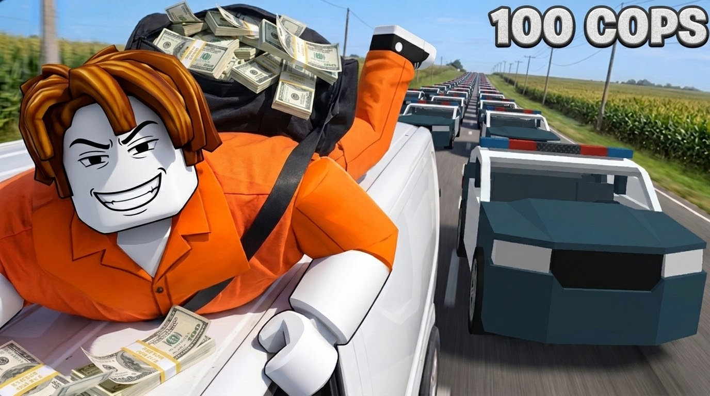
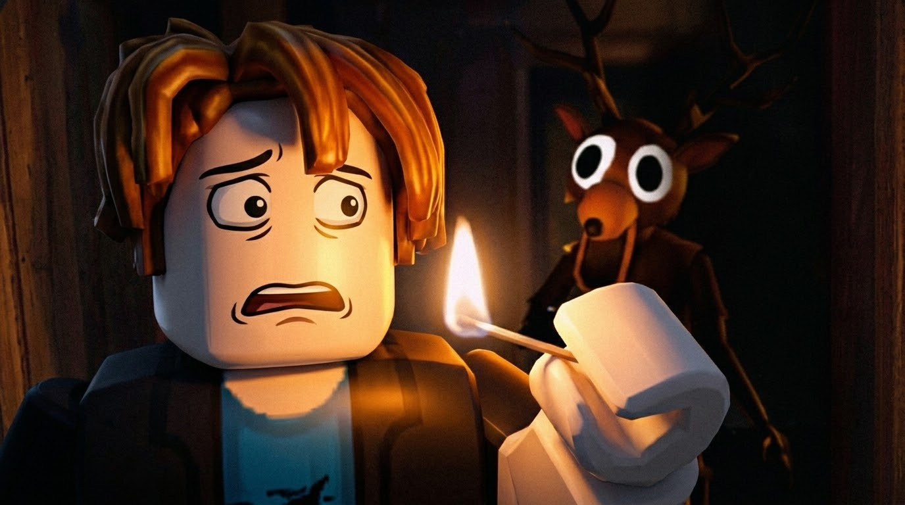
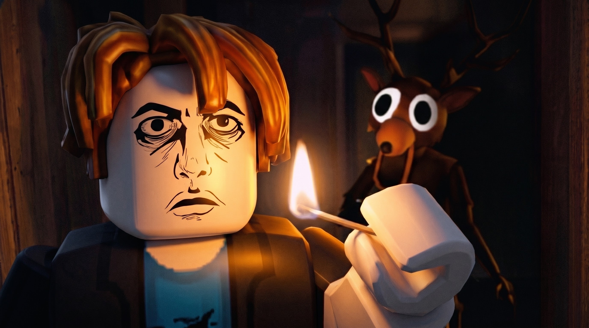
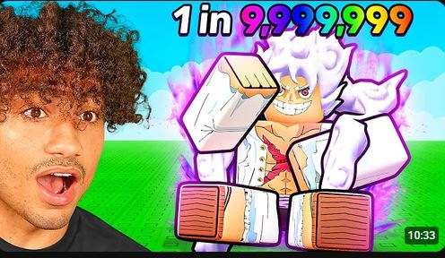
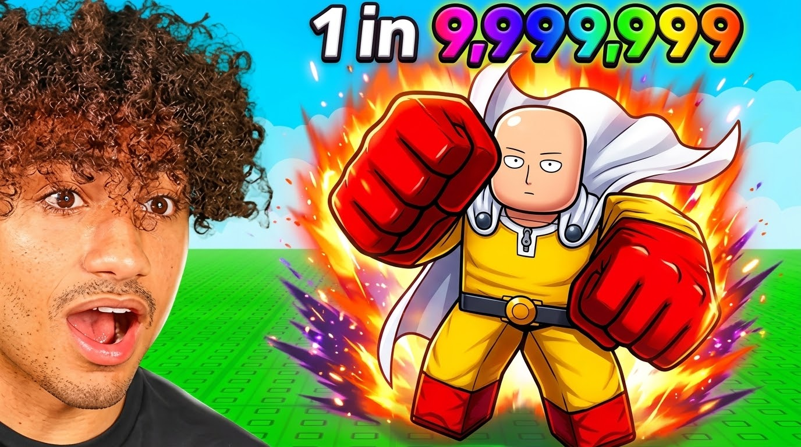
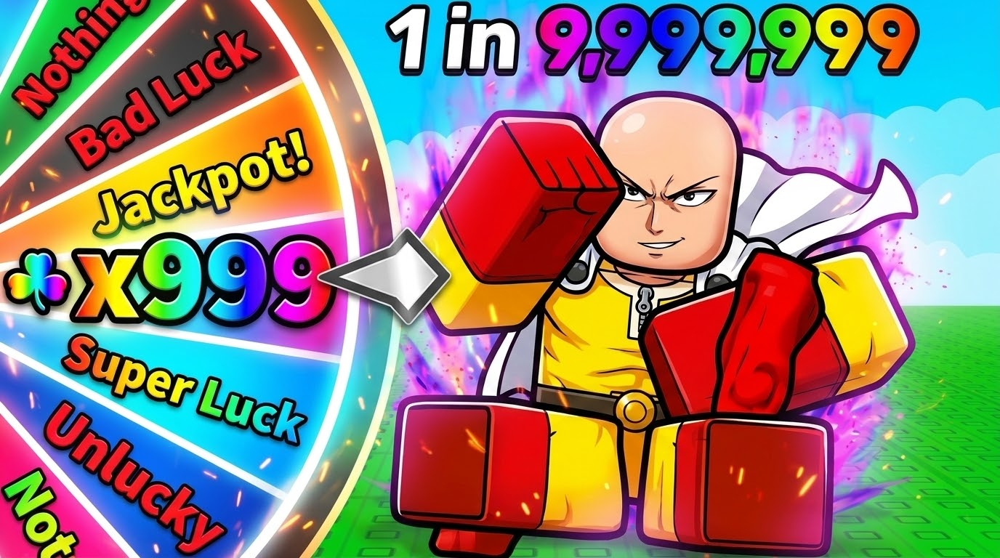
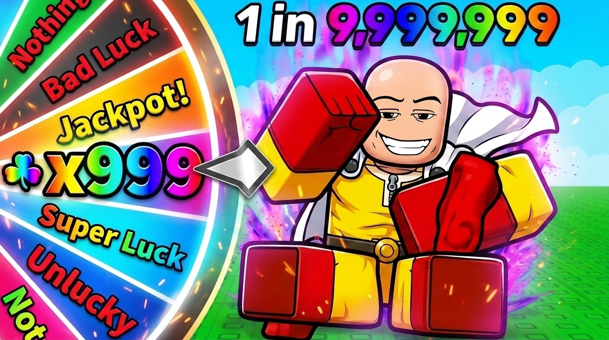
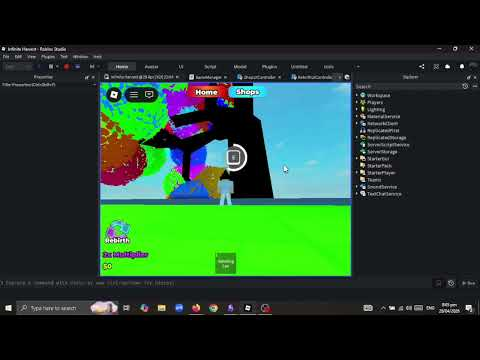
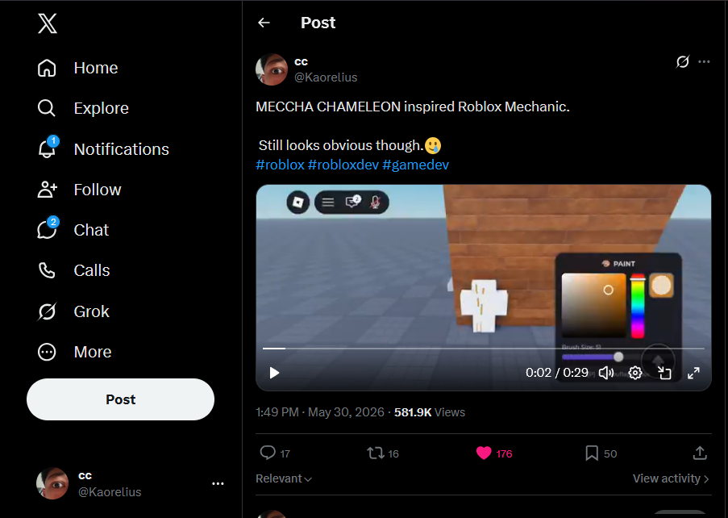
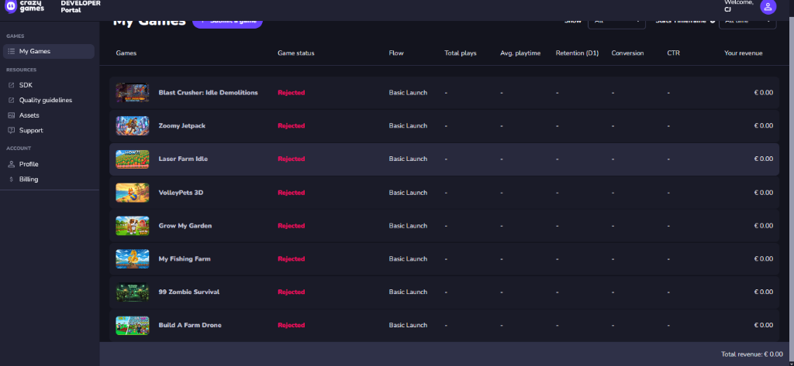

01 • The Benchmark Reference
The Target
High-performing MrBeast 100 Cops composition analyzed for camera tilt, character scale, and mobile focal tension.
XOLBOR STUDIOS • CANDIDATE FILE
I’m Keso (@obsurv). I engineer high-CTR Roblox thumbnails, cut high-retention trailers in CapCut, reverse-engineer viral mechanics, and prototype games with emerging AI models.
CASE STUDY 01 • ACTION
Benchmarked against viral YouTube heist formats. Moving from raw, cluttered AI drafts to saturated daylight, low Dutch camera angles, and high-visibility police siren flares.
High-performing MrBeast 100 Cops composition analyzed for camera tilt, character scale, and mobile focal tension.
Initial monolithic generation. Flat lighting, cluttered background buildings, and lack of silhouette separation between characters and environment.

2752×1536 Master. Low Dutch angle, saturated daylight, bold character silhouettes, and high-visibility police cherry-topper blooms designed for mobile CTR.
CASE STUDY 02 • HORROR
Claustrophobic darkness meets Roblox meme culture. Deep charcoal shadows, warm candle flame falloff, and an iconic popular Roblox meme expression.
Matchstick survival tension benchmark analyzed for point-light falloff and facial suspense.
Too bright, generic AI face lacking recognizable Roblox identity, and weak psychological tension.

2752×1536 Master. Conditioned with a popular Roblox meme face, deep atmospheric fog, and warm point-light rim illumination against deep shadows.

CASE STUDY 03 • RNG SIMULATOR
Tapping into the Sol’s RNG meta. Replacing disconnected human YouTuber reaction faces with an in-universe x999 prize wheel, rainbow odds, and A/B audience targeting.
Top YouTube anime simulator benchmark featuring human creator reaction face.

Initial character and environment pass. Testing the blocky avatar pose and background illumination before introducing the jackpot mechanic.

Conditioned with the iconic Saitama anime expression to target 13+ Shonen anime fans who respond to recognizable anime combat humor.

Swaps to a native Roblox meme face, paired with an in-universe x999 wheel jackpot, 1 in 9,999,999 rainbow typography, and cosmic particle aura to maximize taps among younger mobile players.

PROMOTIONAL TRAILER
Fast-paced, mobile-first pacing designed to stop the scroll on TikTok and Roblox Discover.
THE LAB • BEYOND THUMBNAILS
Copying success works. I reverse-engineer viral platform mechanics, ship gameplay prototypes rapidly, and test what gets attention.
Built a playable Roblox experience with farming, crop harvesting, tool interactions, and inventory loops. Watch the gameplay showcase directly below:

Open on YouTube →Spotted a trending mechanic (“Meccha Chameleon”) and rapidly rebuilt the color-matching stealth camouflage system inside Roblox within 48 hours. The post sparked massive organic discussion with over 580,000 impressions.

8 complete game prototypes built and submitted across Idle, Jetpack, Farming, and Zombie survival genres. Zero hesitation to ship, test with publishers, learn from feedback, and build again.

THE SYSTEM • HOW I WORK
My workflow is simple: find a proven thumbnail format people click on, use Google Flow to deconstruct the format, swap in custom assets, and iterate until it hits blockbuster quality.
Identify winning formats with proven high CTR. Deconstruct camera angles, silhouette contrast, and emotional hooks.
Use Google Flow to clone the structure while systematically replacing elements with custom Roblox avatars, assets, and lighting passes across multiple iterations.
Edit promotional gameplay trailers in CapCut with speed-ramped dashes, tight cuts, and mobile-first pacing designed for TikTok and Discover.
AI EXPLORATION • ACTIVE LEARNER
I don’t wait for tutorials — I actively test new AI releases to see what they can build. I’ve used DeepSeek to vibe-code complete 2D sandbox game loops (Growtopia-style building and farming), leverage Google Flow for multi-pass visual deconstruction, and continuously track frontier models to see how they can eliminate production bottlenecks for game studios.
AI SPECIALIST CANDIDATE
Flexible studio availability with rapid async turnaround. Ready to collaborate with your artists, programmers, and live-ops team on weekly update cycles.